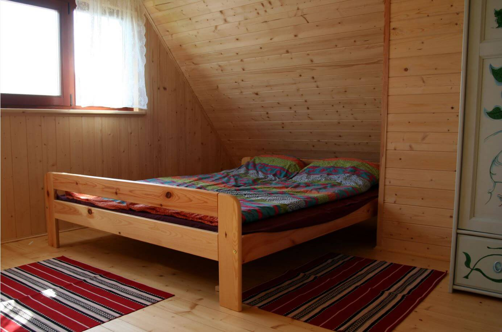
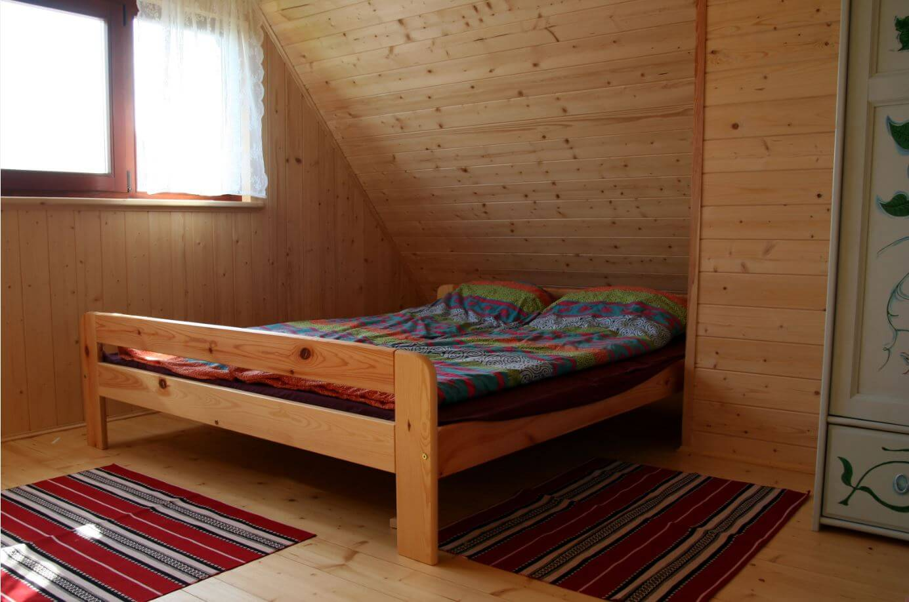
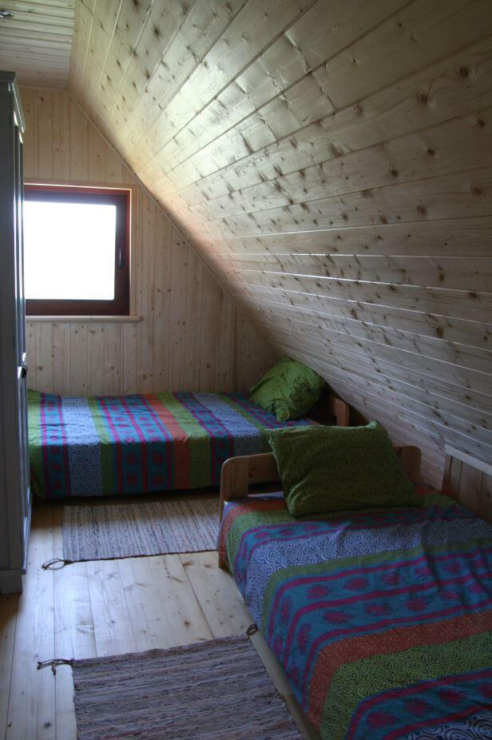
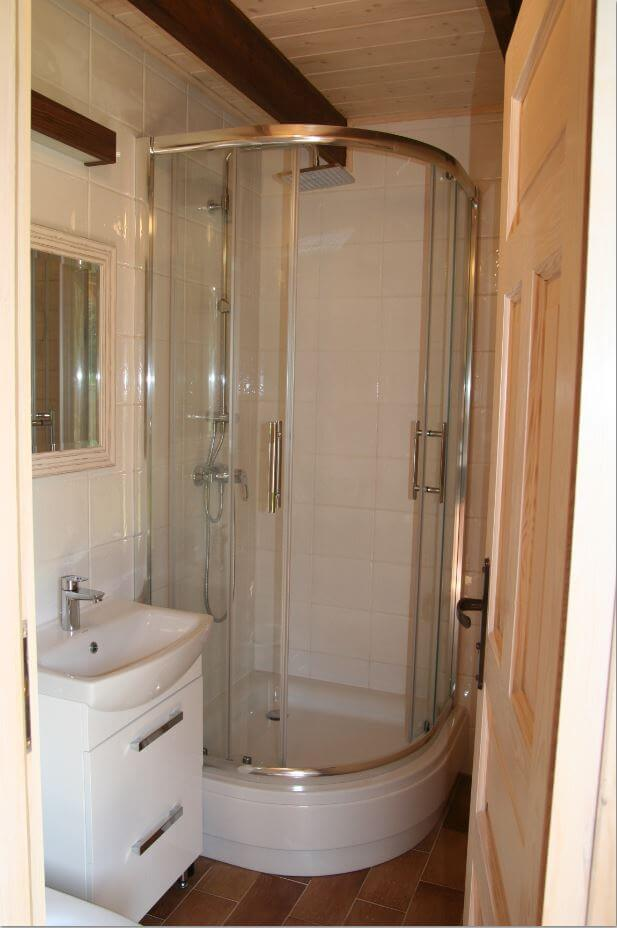
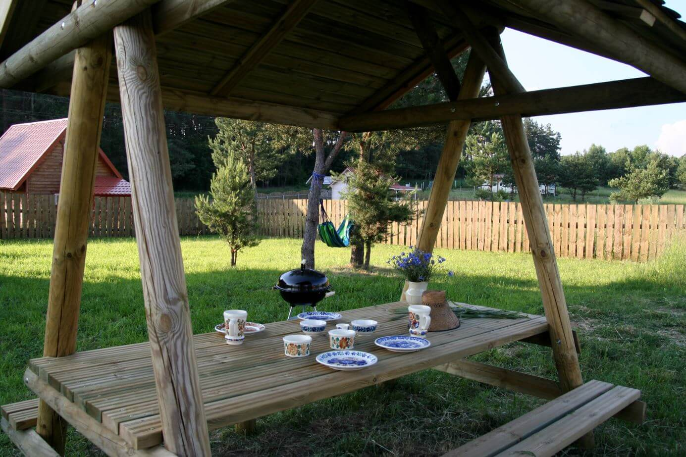
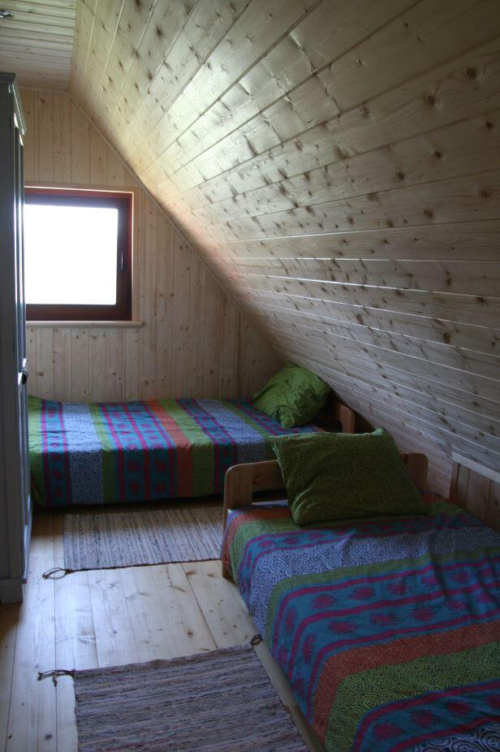
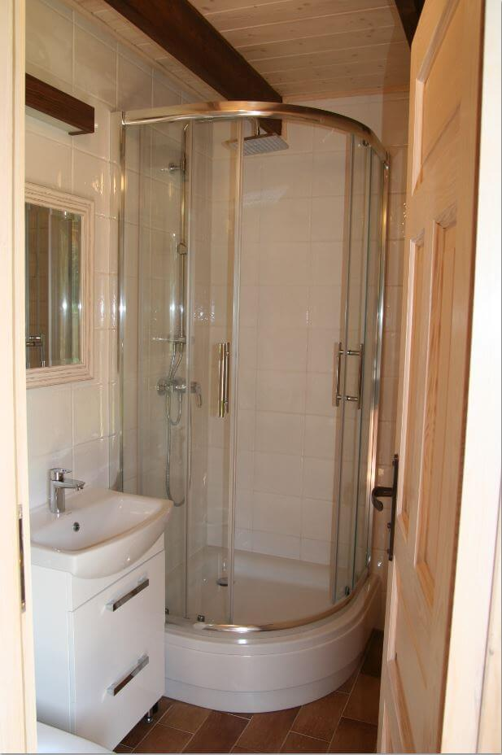
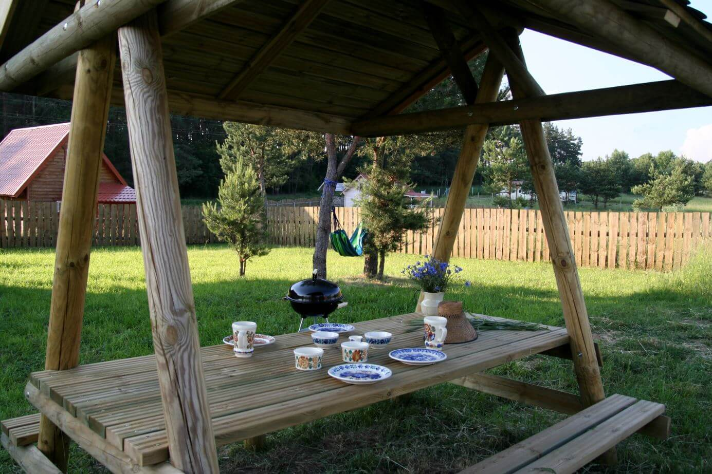
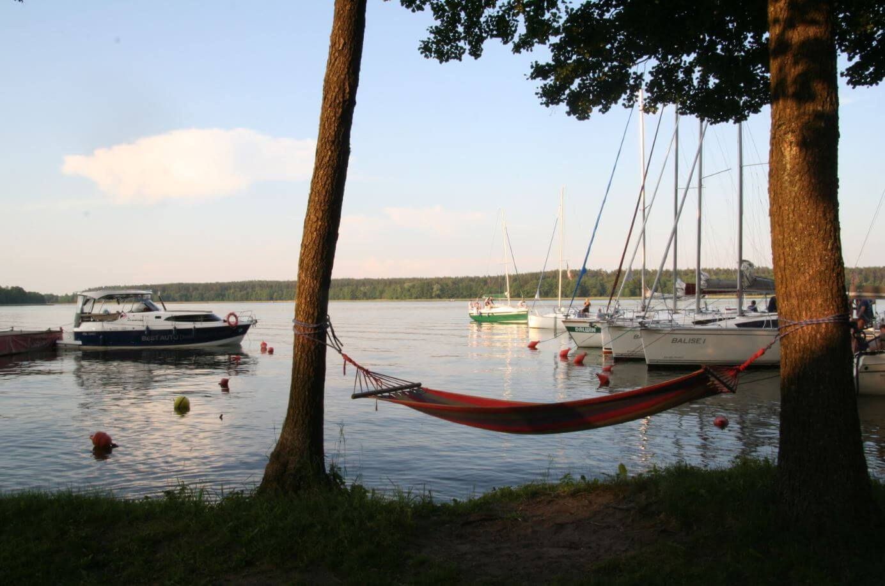
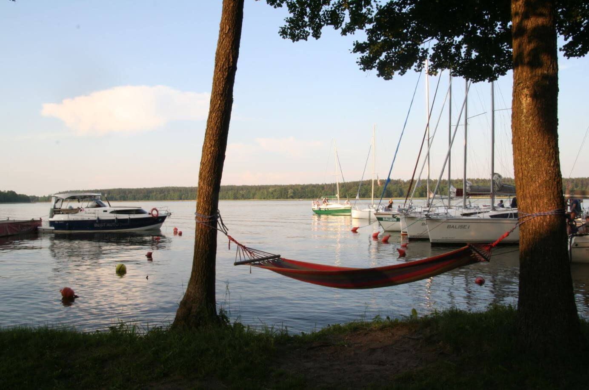

Description
Newly built cottage in Masuria in Skorupki Village (9 km from Mikolajki). On the ground floor there is a living room with a kitchenette and a bathroom. Upstairs there are 3 double bedrooms (2 rooms with single beds / 1 room with double bed). The living room has a table with chairs and a sofa bed (double bed). The kitchenette is equipped with a fridge, dishwasher, induction hob, microwave, kettle and full kitchen utensils. Check galery
Payment per day 350 PLN (min. 7 days, max. 8 people) + costs incurred during the stay as media, rubbish. Payment for renting less than 7 days to be confirmed. Advance payment 30% should be pair after booking confirmation. Remaining amount should be paid in arrival day together with deposit 500 PLN (return on departure). The house will be available on the day of arrival from 16 o'clock. On the day of departure, please leave the house by 12 o'clock
If you are looking for peace and quiet surrounded by nature this is the place for you. The house is located on the edge of the forest, 250 m from Lake Tałtowisko. At the lake there is a public beach, marina and tavern (possibility of meals). There is a possibility of cruising on the Masurian lakes for an additional fee. The area invites to hiking and biking tours. While getting into the car, you can see:
- Ryn Castle,
- Farm in Kosewo,
- Tarpan reserve in Popielno,
- In Pranie - museum,
- in Gizycko: church from XIX century, Swing bridge, Boyen Fortress,
- Owczarnia – Masurian Museum,
- Wolf's Lair,
- Ketrzyn: castle from XIV, church from XIV century,
- Swieta Lipka - Sanctuary of St. Mary,
- Castle from XV in Reszl,
- A baroque palace and park complex in Sztynort,
- The Masurian Canal and several meters long locks in Guja and Lesniew
- in Mamerki Headquarters of the Land Forces Command (OKH),
- in Pozezdrze Himmler’s field office,
- The tomb of the Farenheid family in the shape of a pyramid in Rapa,
- European bison in Wolisko,
- Paprotki - excavations of a fortified settlement and the Galindian cemetery from thousand years ago
- Sailing Village in Mikolajki,
- Luknajno reserve,
- Krutyn – kayaking ,
- in Wojnow monastery complex of Old Believers - Filipons from XIX century,
- Kadzidlowo – animal reserve.


 

 







 
